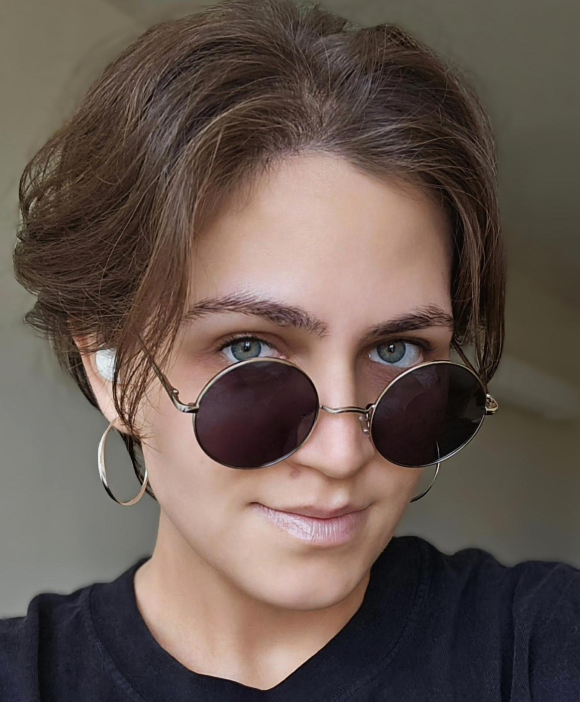
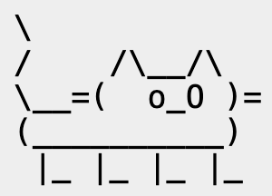
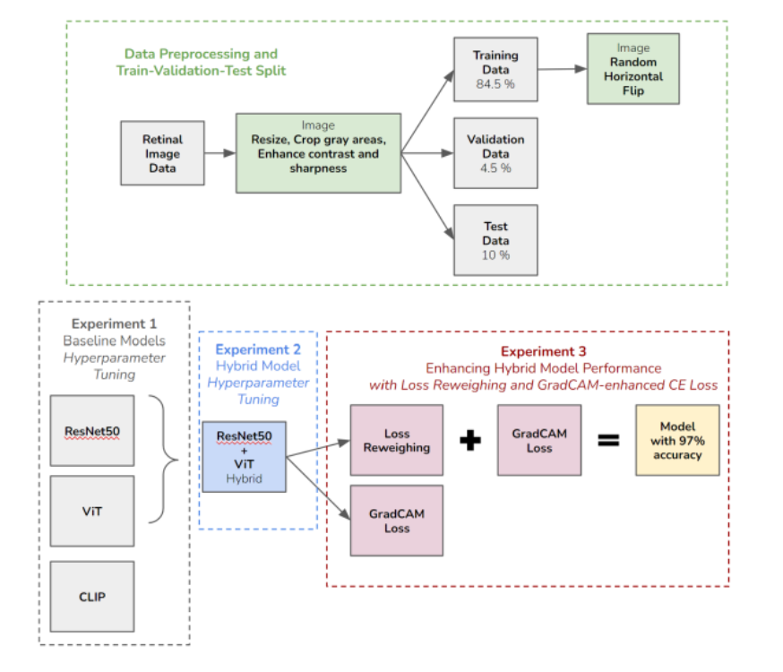
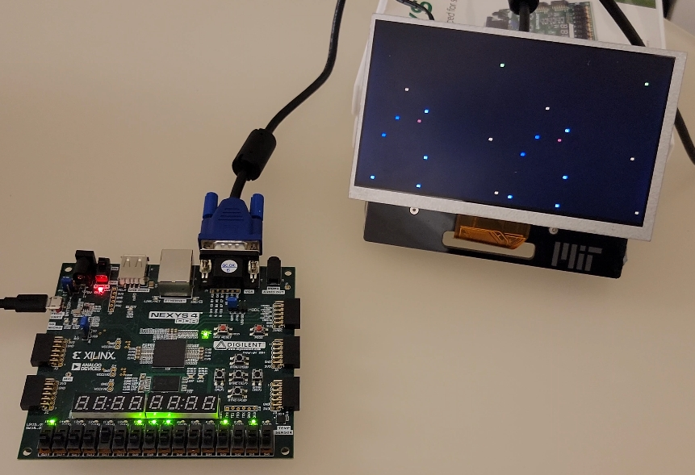
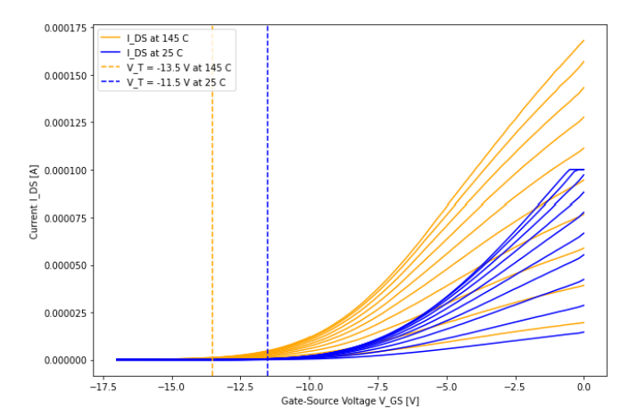
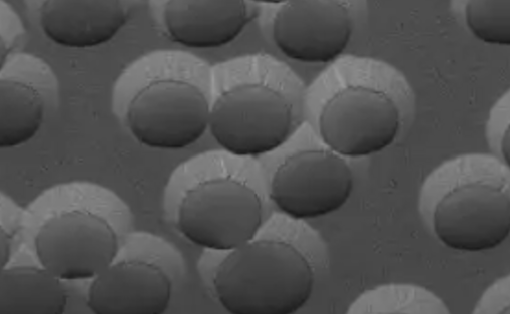
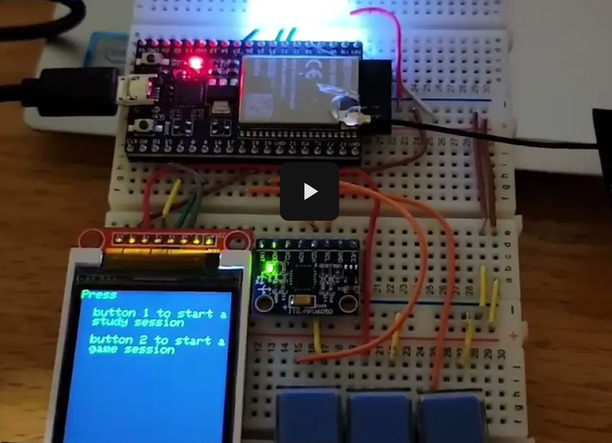

|
Lejla Skelic I'm an aspiring researcher ‚òùÔ∏èü§ì and a current M.Eng. student at MIT supervised by Prof. Ruonan Han. At Terahertz Integrated Electronics Group, I am working on large language model (LLM) applications in analog circuit design. Curious to learn more? Take a look at my CV. ( ‚Ä¢ ·¥ó - ) ‚úß |
 |
{kind=link}
Research
My research interests lie in computer systems and machine learning. Can machines think? Turing might wonder; I prefer to experiment (⌐■_■)⌕
|

|
TBD
Large language model (LLM) applications in Analog Circuit Design.
|
Teaching
I love teaching, kindling the flames, and helping students discover their own stars to navigate by ♡⸜(˶˃ ᵕ ˂˶)⸝♡
|
|  |
Graduate Teaching Assistant[Sep 2023 - Dec 2024] Teaching Assistant and Recitation Instructor for 6.100A/B/L at MIT. |
ProjectsI worked on a few projects over the years. To tinker is, for Lejla, to truly be ദ്ദി(˵ •̀ ᴗ - ˵ ) ✧ |
|  |
Advancing Diabetic Retinopathy DetectionImplemented hybrid CNN-transformer architectures, integrating synthetic data, and novel loss techniques to address model bias. [Paper] |
|  |
SkyLocator: Star Observation VR System on FPGADeveloped a hybrid FPGA-IoT system for real-time VR star observation. [Paper] |
|  |
Characterizing Temperature-Dependent Behavior of IGZO Thin-Film TransistorsDesigned, fabricated, and tested IGZO transistors and resistors with varying channel lengths under different temperature conditions. [Paper] |
|  |
Fabricating Light-Trapping Microstructures for Enhanced Performance in Organic Solar Cells
Designed and fabricated light-trapping microstructures using polystyrene nanospheres.
|
|  |
Scribble-Or-Study System on ESP32Designed and implemented an interactive IoT system featuring group studying and online scribble game sessions. [Website PDF] |
HobbiesWhen I'm not debugging code, refining research objectives, or rethinking teaching strategies, you'll find me at the gym, adventuring through virtual worlds, diving into philosophical rabbit holes, or, quite literally, touching grass. |

|
Hiking, Biking, Running, SwimmingI saw the sunset forty-four times ☀︎, maybe the 45th will be the one where I finally see its beauty with my heart. |

|
GamingWhat can I say, it's the ultimate gateway drug to programming... |